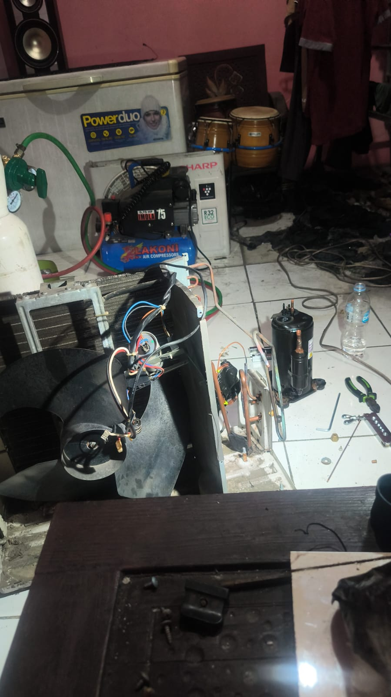

RAC & PendinginServis & Penggantian Kompresor AC Outdoor
Pembongkaran unit outdoor AC Sharp R32, pemipaan tembaga, pemasangan kompresor pengganti, pemvakuman dengan pompa vakum Lakoni, serta persiapan manifold.
Kompresor R32
Pompa Vakum
Manifold Gauge
Brazing Tembaga